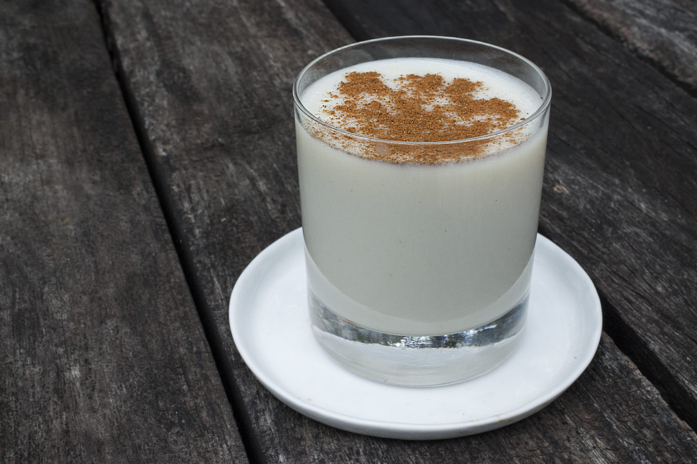

Venezuelan Chicha Recipe

Chicha is a latinamerican drink that can be prominently found in countries like
Venezuela. It is an incredibly sweet and milky drink, often topped with cinnamon and chocolate chips.
This recipe strives to emulate that flavor that is so beloved. The source recipe can be found over at
mommy's home cooking.
Ingredients
- 1 cup (215 gr) white rice
- 2 cinnamon sticks
- 5 cups (1.2 l) water
- 1 teaspoon salt
- 1 cup (240 ml) whole milk
- 12 oz (354 ml) evaporated milk
- 14 oz (397 g) sweetened condensed milk
- 2 teaspoons (10 ml) pure vanilla extract
- Ice and ground cinnamon to serve
Instructions
- Place rice, cinnamon sticks, and 1 cup of water in a bowl; mix to combine. Let the rice soak for at least an hour up to overnight.
- Transfer soaked rice to a medium saucepan or pot. Add 4 cups of water and salt; mix to combine. Cook over medium-low heat for 30-35 minutes, or until the rice is super tender and mushy. Let the cooked rice cool.
- Once the rice has cooled, remove the cinnamon sticks. Place rice in a blender. Add whole milk, evaporated milk, sweetened condensed milk, and vanilla extract; blend until smooth. Note: You can add more milk if the chicha is too thick for your liking.
- Transfer to a jar and refrigerate until ready to serve.
- Serve with ice if desired, garnish each serving with ground cinnamon or cinnamon sticks.